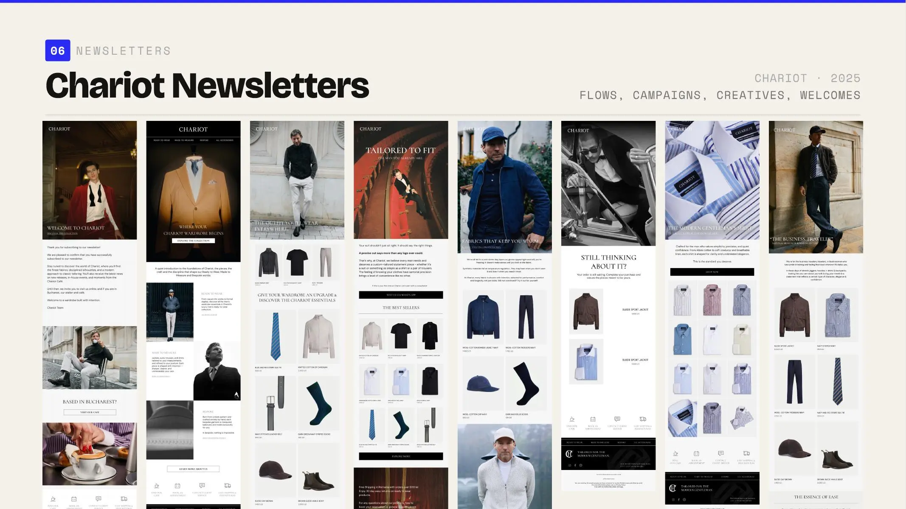

Lead with desire.
Editorial imagery and a concise proposition establish the reason to keep reading.
Establishing the digital foundations for a luxury fashion retailer.

Initial ecommerce direction, campaign newsletters and lifecycle email.
Chariot needed a starting digital language that could introduce products, support discovery and move into campaign moments without losing its luxury fashion character.
I worked across the initial ecommerce experience and email system. Although the collaboration ended at an early stage, the completed work established a cohesive visual and communication foundation across web and email.
Editorial imagery creates desire first, while product information and commercial actions remain clear within long-form, mobile-first layouts.
Welcome, discovery and product-led messages use one rhythm while changing what the customer needs to understand and do next.
Lead with desire, reduce the decision and make the next action unambiguous. Those priorities create a flexible starting system without overcomplicating the early-stage work.
Editorial imagery and a concise proposition establish the reason to keep reading.
Product groupings, benefits and supporting detail make the next action easier to understand.
One primary call to action closes the sequence without competing with the fashion story.